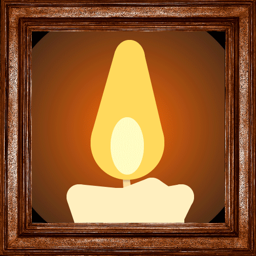

DARKTOMB
DARKTOMB is a 3d first person puzzle game I made solo in Unity. The main feature being the tile based movement and ghosts that follow you if they have line of sight. This is a complete, if small, game. I focus mostly on sound design and atmosphere in this one. The woosh of ghosts moving, the sound of steps on the stone floor and the howl of wind from the outside slowly quieting as you go further into the tomb.

Candle
Candle is a school animation project made primarily in Adobe Illustrator. The task was to make an animation in Illustrator and animate it, all in 4 hours. This animation won the people's choice award.
Den flydende tidslinje
This is a skole group project made for the danish natural museum Naturama for an exhibition about the permian period. In this project I focused on coding the game while the others the visual elements. The game itself was made in Unity and is a puzzle game where you have to reconstruct what the earth land masses looked like long ago using the modern continents. The game was meant to give an insight into how the earth is not a static thing but a thing that changes though very slowly.

Postapo Valley
Postapo Valley is a top down 2d survival puzzle game with the main features being the building and upgrading of buildings and tools to progress, again made in Unity. This was a group project, 3 people, where I focused on the visual elements and level design. The game has a pixel art aethstetic with a limited colour palette, 8 colours.

Space War!
Space war! is a 1v1 spaceship shooter with a blackhole in the center made solo in a 24 hours game jam. The theme was ‘recreation’. Each player has control over a spaceship with front face guns, currently spiraling into a blackhole in the center of the screen. The goal for each player is to shoot the other without themselves falling into the blackhole. I also focused a lot on making a coherent aesthetic in this game, making the game look and sound like you are playing it on an ancient computer.

Man Rowing
Man rowing is a school animation project. A short funny animation of a fisher rowing really fast in to another ship which I made, alone, in 1 day. It won the people's choice award. The only thing I didn't have time to add was sound.
Bleeding
Bleeing is a digital painting made in photoshop.

Keep Quiet
Keep Quiet is an ongoing tabletop roleplaying game project, in the lines of Dungeons & Dragons. It’s a fully standt game, you can play it with your without any other materials other than dice of course.
It is set in a weird, occult version of the late 1800’s. The game focuses on normal individuals down on their luck seeking fortune in the mysterious, dangerous and ever changing underground of a city of electricity, hidden power struggles and secret societies.